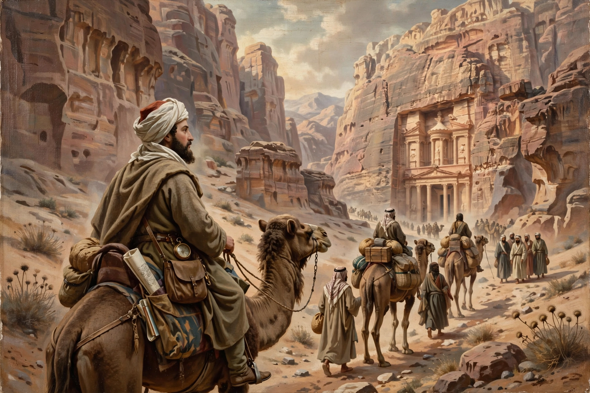

| Johann Ludwig Burckhardt | |
|---|---|
| Born | 24 November 1784, Lausanne, Switzerland |
| Died | 15 October 1817 (aged 32), Cairo, Egypt |
| Nationality | Swiss |
| Other names | Sheikh Ibrahim Ibn Abdallah |
| Known for | Rediscovering Petra (1812) and Abu Simbel (1813) |

Johann Ludwig Burckhardt (24 November 1784 – 15 October 1817) was a Swiss traveller, geographer and orientalist who explored Arabia, Nubia and the Levant in the service of the British African Association. Travelling in disguise as a Muslim merchant under the name Sheikh Ibrahim Ibn Abdallah, he became the first modern European to describe the ruins of Petra (1812) and the great temple of Abu Simbel (1813), and one of the first Westerners to give detailed accounts of Mecca and Medina.
Burckhardt was born in Lausanne and raised in Basel, studying at Leipzig and Göttingen. In London he came under the patronage of Sir Joseph Banks and the African Association, which sought a route to the Niger and Timbuktu. To prepare, Burckhardt studied Arabic at Cambridge and medicine and astronomy in London, hardening himself by sleeping rough and eating vegetables, then spent two years in Aleppo perfecting his Arabic and his assumed identity.
From Aleppo he travelled through Syria, Lebanon, Jordan and Palestine, visiting Palmyra, Damascus, Baalbek and Mount Lebanon. In August 1812, travelling from Damascus to Cairo, he heard of a lost city in the mountains near Wadi Musa. Disguised as a pilgrim wishing to sacrifice a goat at the tomb of Aaron, he passed through the narrow Siq and on 22 August 1812 became the first modern European to gaze on the carved façades of Petra, including the Treasury (Al-Khazneh).
In 1813 Burckhardt travelled up the Nile into Nubia. In March of that year local guides led him to the sand-buried Great Temple of Abu Simbel, whose colossal statues of Ramesses II he described to the world, though drifting sand prevented him from entering; the temple was cleared four years later by Giovanni Belzoni. He went on to cross the Red Sea to Jeddah and, in 1814, made the pilgrimage to Mecca, where he spent three months documenting the Hajj and the holy city in extraordinary detail, before visiting Medina.
While waiting in Cairo for a caravan to Fezzan as the first stage of his trans-Saharan journey, Burckhardt contracted dysentery and died on 15 October 1817, aged 32. He was buried in Cairo's Muslim cemetery under his assumed name. His journals, published posthumously by the African Association — including Travels in Nubia (1819), Travels in Syria and the Holy Land (1822), Travels in Arabia (1829) and his celebrated Notes on the Bedouins and Wahábys — remain landmarks of Middle Eastern travel literature for their accuracy and sympathy.